原料甄选
选取天然瓷石与高岭土，反复淘洗、经年陈腐，方能成就胎土的细腻温润。
宋瓷复刻技艺传承
宋代五大名瓷的烧制技艺曾一度失传，历经当代匠人数十年的潜心钻研，通过对传世珍品的成分分析、工艺复原，终于让千年窑火重燃。如今，宋瓷烧制技艺已被列入国家级非物质文化遗产名录，成为中华优秀传统文化传承的重要载体。复刻宋瓷需历经原料甄选、手工拉坯、施釉烧制、精细打磨四大核心环节，每个步骤都需严格遵循宋代工艺标准，方能还原宋瓷的风骨与神韵。
原料甄选：胎釉根基
参照宋代窑址出土标本，从汝州、禹州、杭州等古窑原产地甄选原料（汝窑用汝州高岭土+玛瑙石，官窑用杭州紫金土）；通过X射线荧光光谱分析还原古料矿物配比，经淘洗、陈腐、揉泥等工序，让胎土具备宋代瓷胎的致密性与可塑性，釉料反复调试熔融温度和呈色效果。
手工拉坯：器型风骨
沿用宋代纯手工拉坯技法，轮盘上凭手感把控器型弧度、比例与胎壁厚度（如汝窑盘“芒口”处理、哥窑瓶肩颈过渡）；拉坯后经利坯、修坯精细塑形，阴干至半干后素烧，增强坯体强度，确保后续施釉、烧制不易变形。
施釉烧制：釉色灵魂
采用宋代对应施釉技法（汝窑满釉裹足支烧、官窑多次施釉、钧窑窑变施釉），通过蘸釉、荡釉、喷釉控制釉层厚度；入柴窑以还原焰烧制，精准调控升温曲线（汝窑需从室温升至1260℃，保温4小时）、窑内气氛，还原“雨过天青”“金丝铁线”等经典釉色。
精细打磨：温润质感
出窑后手工去除支钉痕、窑粘等瑕疵，用细砂纸从粗到细打磨圈足、口沿；最后通过“擦釉”工艺提亮釉面，去除烧制过程中可能产生的微小气泡和杂质，赋予器物“光致茂美、温润如玉”的宋代瓷特有的触感与光泽。
非遗传承人故事
宋瓷技艺的传承，离不开一代代非遗传承人的坚守与创新。他们或出身制瓷世家，或半路投身钻研，数十年如一日深耕工艺，破解古代技术密码，复刻经典器型，同时推动宋瓷技艺与现代生活融合，让千年窑火在当代焕发生机。
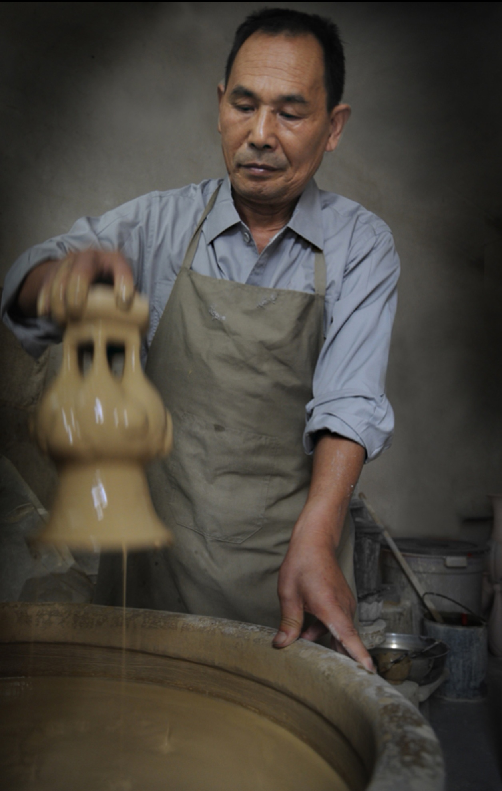
朱文立 汝窑
第四批国家级非物质文化遗产汝瓷烧制技艺代表性传承人
1950年生于汝州，1970年投身汝瓷研究，师从汝瓷老艺人李国桢。耗时20余年分析汝窑窑址标本，1987年成功烧制符合宋代特征的汝瓷天青釉产品，破解“玛瑙入釉”“满釉支烧”技术密码；复刻汝窑盘、瓶、洗等经典器型，作品被故宫博物院、中国国家博物馆收藏，出版《汝窑的发现与研究》，建立汝瓷工艺系统理论体系。
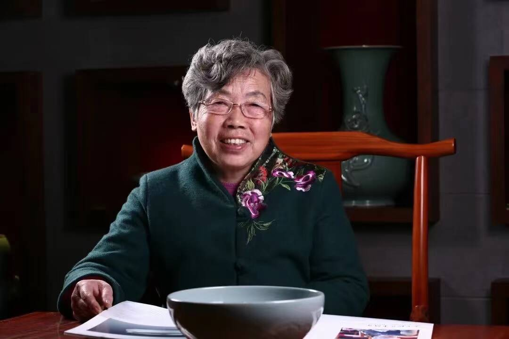
孟玉松 汝窑
第四批国家级非物质文化遗产汝瓷烧制技艺代表性传承人
1942年生于汝州，1961年进入汝瓷厂参与汝瓷恢复工作，深耕60余年。率先将硅酸盐化学理论应用于汝瓷釉料研究，精准还原天青、天蓝、月白等釉色呈色机理；擅长传统造型设计，作品《汝窑天青釉盘》《汝窑玉壶春瓶》被中国工艺美术馆收藏；创办汝瓷传习所，培养超百名传承人，推动汝瓷技艺规模化传承。
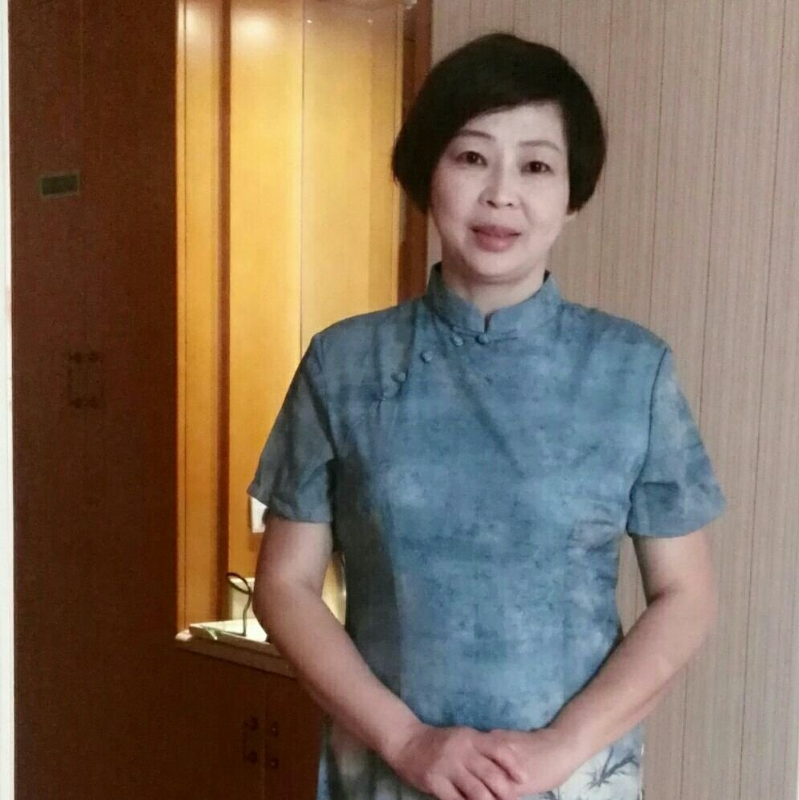
王东霞官窑
省级非物质文化遗产北宋官窑烧制技艺代表性传承人，北宋官瓷技艺传承与推广核心人物。
生于开封官窑技艺世家，师从北宋官瓷复烧名家，深耕北宋官窑烧制技艺研究与实践四十余年。主导复刻出贯耳瓶、琮式瓶等数十种北宋官窑经典器型，作品被中国陶瓷博物馆、河南博物院等机构收藏；致力于官窑技艺的普及传承，培养了大批青年陶艺从业者；编撰《北宋官窑烧制技艺实操图谱》，为官窑技艺的系统传承提供了理论与实操依据。
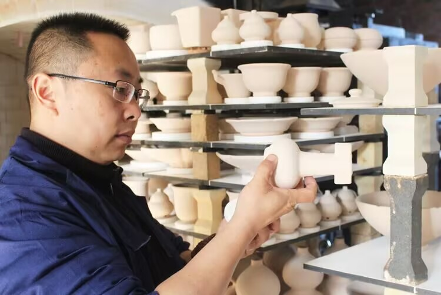
叶克伟 官窑/哥窑
浙江省非遗南宋官窑瓷制作技艺传承人，“叶氏哥窑”第三代传人
1968年生于杭州，自幼跟随父亲叶德奎学习哥窑与官窑烧制技艺，长期研究杭州老虎洞、郊坛下南宋官窑窑址遗存。还原南宋官窑“紫口铁足”“聚沫攒珠”的工艺特征，攻克哥窑“金丝铁线”开片的人工控制技术；复刻的南宋官窑贯耳瓶、哥窑鱼耳炉等作品，被浙江省博物馆收藏；建立“叶氏哥窑”非遗工坊，系统整理哥窑烧制技艺的口述史与实操技法。
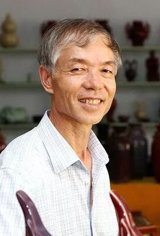
苗长强 钧窑
第五批国家级非物质文化遗产钧瓷烧制技艺代表性传承人
1962年生于禹州神垕镇，出身钧瓷世家，师从父亲苗锡锦（钧瓷泰斗），深耕40余年。复刻宋钧窑鼓钉洗、出戟尊等经典器型，精准还原“海棠红”“玫瑰紫”窑变釉色；首创“煤烧钧瓷还原焰”烧制工艺，提升仿古钧瓷质感与呈色稳定性；作品《钧窑四海升平尊》被人民大会堂收藏，推动宫廷工艺与民间传承融合。
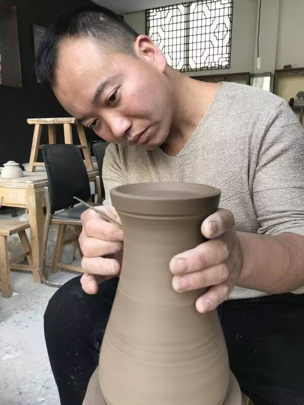
张洋洋 钧窑
禹州市级非物质文化遗产钧瓷烧制技艺传承人
1990年生于禹州神垕镇，师承苗长强，是钧瓷技艺青年代表。专注钧瓷天青乳光釉创新烧制，将现代设计理念融入传统器型；作品《龙头樽》《荷口瓶》获中国陶瓷工业协会“大地奖”金奖；通过短视频、直播推广钧瓷技艺，设计钧瓷文创产品，让非遗贴近年轻受众，拓展现代应用场景。
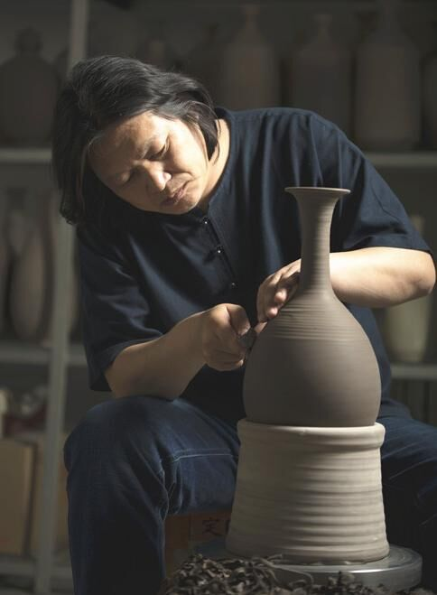
庞永辉 定窑
河北省非物质文化遗产定瓷烧制技艺代表性传承人
1973年生于曲阳，师承中国工艺美术大师陈文增，系统学习定瓷全流程工艺。突破定瓷“无大件”局限，成功拉制高100cm定瓷瓶，创中空、双层拉坯新工艺；复刻宋定窑白釉刻花梅瓶、孩儿枕，还原“白如玉、薄如纸、声如磬”特征；撰写《定瓷拉坯技艺图谱》，建立定瓷拉坯标准化教学体系。
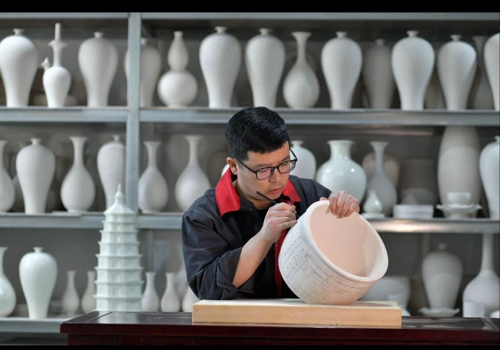
刘辛广 定窑
定州市非物质文化遗产定窑手工制瓷技艺传承人
1980年生于定州，深耕定瓷釉料配方与烧制工艺20余年。攻破定瓷白釉、酱釉、黑釉等6种传统釉色技术难题，复原“剔花”“印花”装饰技法；作品《定窑白釉刻花莲纹碗》获中国非遗博览会金奖；推动定瓷与日用陶瓷结合，设计茶具、餐具等文创产品，让传统技艺融入现代生活。
当代复刻成果
当代非遗匠人复刻的宋瓷作品，既严格遵循宋代工艺标准，保留传统韵味，又通过现代技术辅助优化，让千年瓷韵在当代绽放光彩。这些作品不仅成为博物馆收藏的珍品，更通过文创转化、国际交流等形式，成为文化传播的重要载体。
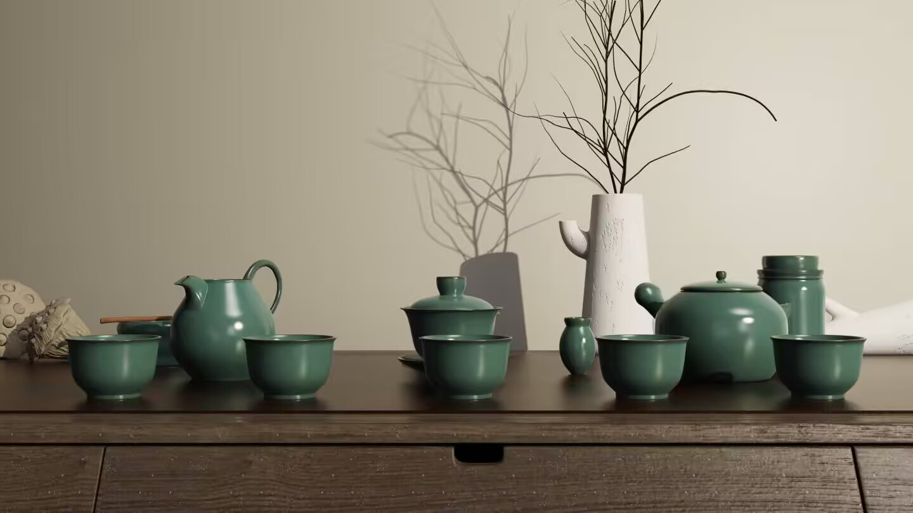
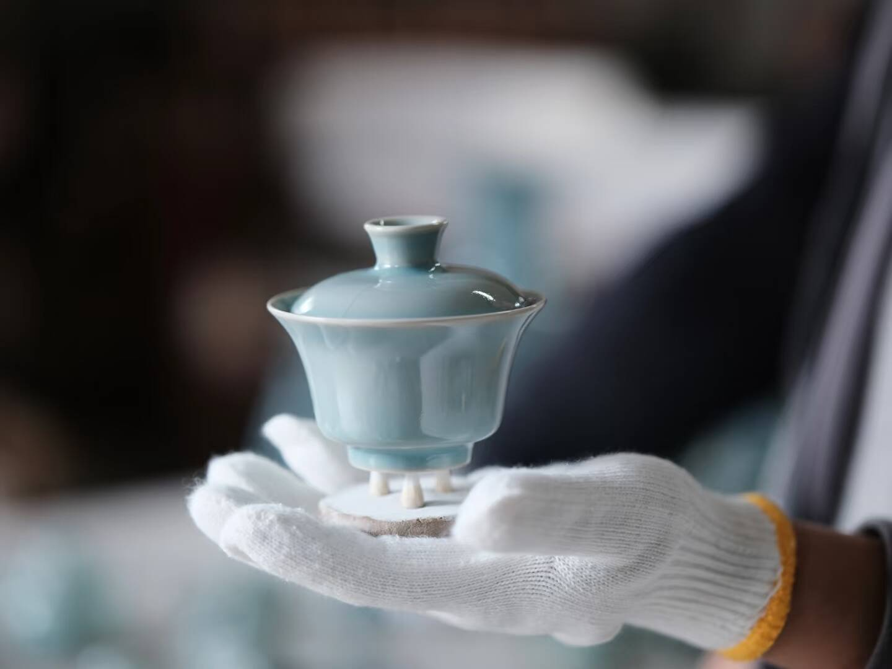
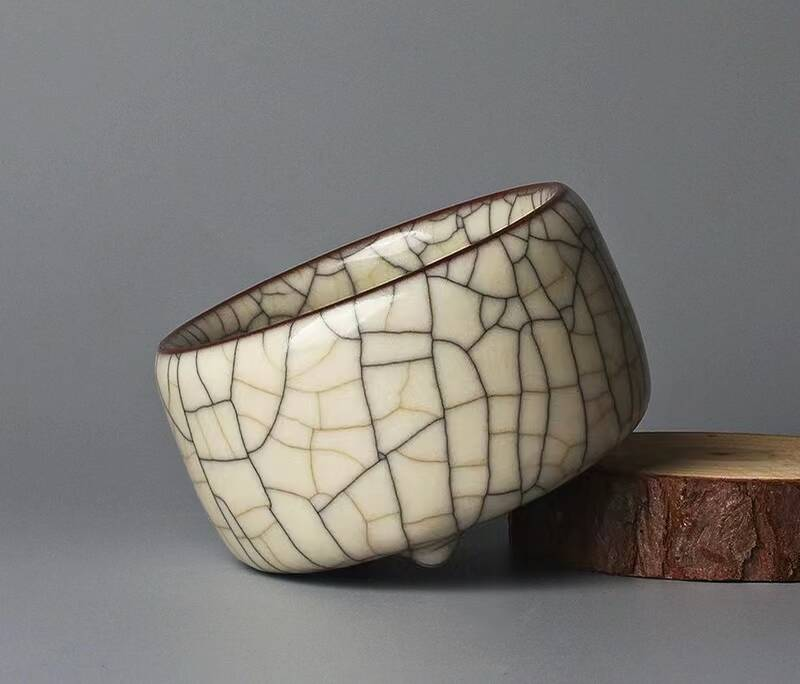